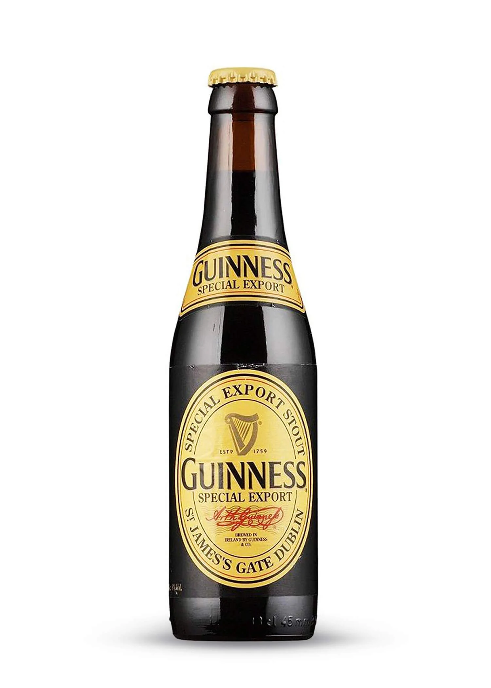

Guiness Stout.

Guiness Stout
Encargada por el aventurero cervecero John Martin en 1944, la cerveza negra Guinness Special Export tiene un potente sabor apropiado para su cervecería belga. El 8 % de alcohol le confiere un cuerpo intenso, una cerveza negra irlandesa con un lado continental.

Vista:Color oscuro denso con una capa espumosa característica.

Olfato: Aromas a cebada tostada, caramelo de dulce de leche, tofe y grosella negra.

Gusto: Generoso sabor malteado combinado con una cebada tostada ahumada. El regaliz y el caramelo de dulce de leche juegan un papel de apoyo junto a las melazas, una pizca de vainilla y matices de bayas.